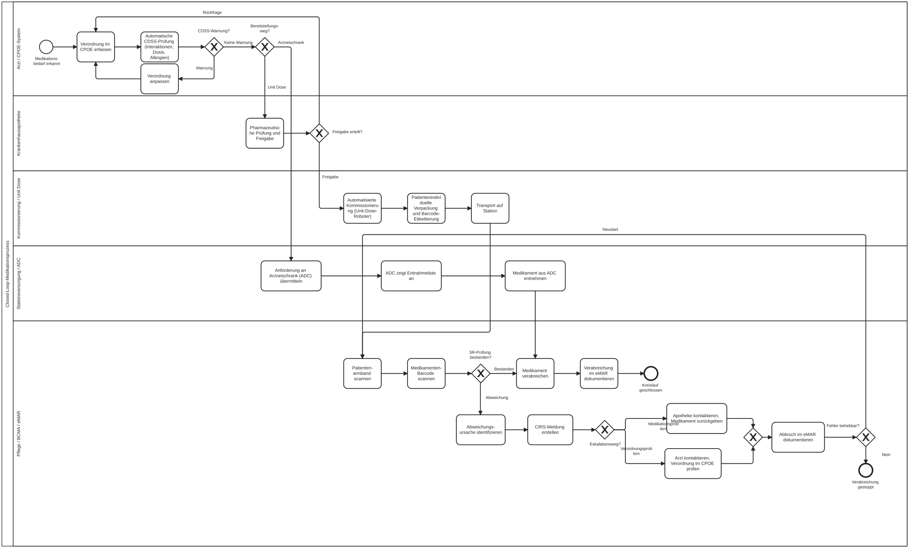

Seiteninhalt:
Die automatisierte Medikamentenvergabe im Krankenhaus stellt einen komplexen, sicherheitskritischen Prozess dar, an dem mehrere Berufsgruppen und Systeme beteiligt sind. Medikationsfehler zählen weltweit zu den häufigsten vermeidbaren unerwünschten Ereignissen im stationären Bereich und können schwerwiegende Folgen für Patientinnen und Patienten haben [WHO, 2017; Tariq et al., 2024]. Die Digitalisierung und Automatisierung dieses Prozesses bietet ein großes Potenzial, solche Fehler systematisch zu verhindern [Tariq et al., 2024].
Dieser Abschnitt beschreibt zunächst das übergeordnete Konzept des Closed-Loop-Medikationsmanagements als Rahmenmodell für einen lückenlosen, digital gestützten Medikationskreislauf. Anschließend wird das Unit-Dose-System als eine der zentralen technischen und organisatorischen Säulen dieses Konzepts vertiefend erläutert. Da jedoch nicht alle Arzneimittelformen über das Unit-Dose-Verfahren bereitgestellt werden können – es eignet sich primär für feste Darreichungsformen wie Tabletten –, wird ergänzend der Bereitstellungsweg über einen stationsgebundenen Arzneischrank (Automated Dispensing Cabinet, ADC) beschrieben, der beispielsweise für Salben oder Cremes zum Einsatz kommt.
Der Begriff „Closed Loop Medication Management" (geschlossener Medikationskreislauf) beschreibt einen vollständig digitalisierten und medienbruchfreien Medikationsprozess innerhalb eines Krankenhauses. Ziel ist die lückenlose, elektronisch gestützte Kontrolle aller Schritte von der ärztlichen Verordnung bis zur dokumentierten Verabreichung am Patientenbett ohne manuelle Übertragungsschritte.
Während ein „offener" Prozess häufig durch Medienbrüche (z. B. handschriftliche Verordnungen, mündliche Weitergabe) und fehlende automatische Prüfschritte gekennzeichnet ist, schließt der Closed Loop jeden dieser Brüche durch IT-gestützte Verifikation. Der Kreislauf gilt als „geschlossen", sobald die erfolgte Verabreichung elektronisch dokumentiert und mit der ursprünglichen Verordnung abgeglichen ist.
Der Closed-Loop-Medikationsprozess lässt sich in folgende Kernprozesse unterteilen:
1. Elektronische Verordnung (CPOE – Computerized Provider Order Entry)
Der Arzt erfasst die Medikamentenverordnung direkt in einem digitalen System (z. B. KIS, PDMS). Dabei wird die Verordnung unmittelbar durch klinische Entscheidungsunterstützungssysteme (CDSS) auf Dosierung, Kontraindikationen, Allergiepotenzial und Arzneimittelinteraktionen geprüft. Fehlerhafte oder riskante Verordnungen werden dem Arzt sofort gemeldet.
Auf Basis der CDSS-geprüften Verordnung bestimmt das System den Bereitstellungsweg: Für feste Darreichungsformen (insbesondere Tabletten) wird der Prozess über den Unit-Dose-Pfad (Schritte 2 und 3a) fortgeführt; für nicht-feste Darreichungsformen (z. B. Salben) über den ADC-Pfad (Schritt 3b), der die apothekerliche Freigabe und zentrale Kommissionierung umgeht.
2. Apothekerische Prüfung und Freigabe (Unit-Dose-Pfad)
Die elektronisch übermittelte Verordnung wird in der Krankenhausapotheke pharmazeutisch geprüft. Nach Freigabe durch den Apotheker wird die Verordnung an das Kommissioniersystem weitergeleitet.
3. Arzneimittelbereitstellung
Je nach Darreichungsform des verordneten Medikaments erfolgt die Bereitstellung über einen von zwei Pfaden:
3a. Unit-Dose-Bereitstellung (für feste Darreichungsformen, insbesondere Tabletten)
Auf Basis der apothekerlich geprüften und freigegebenen Verordnung werden die Medikamente automatisiert kommissioniert. Das hierfür eingesetzte Verfahren wird als Unit-Dose-System bezeichnet: Jede Einzel-Dosis wird patientenindividuell verpackt und mit einem maschinenlesbaren Barcode versehen, der die eindeutige Verknüpfung zur zugehörigen Verordnung sicherstellt. Das Unit-Dose-System ist damit eine Schlüsselkomponente des Closed Loop und wird im folgenden Abschnitt vertiefend beschrieben.
3b. Entnahme aus dem Arzneischrank (ADC) (für nicht-feste Darreichungsformen, z. B. Salben, Cremes)
Arzneimittel, die nicht im Unit-Dose-Verfahren bereitgestellt werden können, werden stationär in einem automatisierten Arzneischrank (ADC – Automated Dispensing Cabinet) vorgehalten. Nach der Verordnung zeigt das ADC-System der Pflegefachkraft automatisch an, welche Medikamente für den jeweiligen Patienten zu entnehmen sind. Die Pflegefachkraft entnimmt das Medikament auf Basis dieser Anzeige direkt aus dem Schrank. Da für diese Darreichungsformen keine maschinenlesbare Einzel-Dosis-Verpackung vorliegt, entfällt der BCMA-Verifikationsschritt; die Verabreichung erfolgt direkt im Anschluss an die Entnahme.
4. Barcode-gestützte Verifikation bei der Verabreichung (BCMA – Barcode Medication Administration) (Unit-Dose-Pfad)
Unmittelbar vor der Verabreichung am Patientenbett scannt die Pflegefachkraft:
Das System prüft in Echtzeit, ob das richtige Medikament in der richtigen Dosis zum richtigen Zeitpunkt für den richtigen Patienten verabreicht wird (Abgleich mit den sogenannten „5 Rs": Richtiger Patient, Richtiges Medikament, Richtige Dosis, Richtiger Applikationsweg, Richtiger Zeitpunkt).
Bei einer Abweichung – d. h. wenn die 5R-Prüfung nicht bestanden wird – wird die Verabreichung vom BCMA-System sofort gestoppt. Die Pflegefachkraft identifiziert anschließend, welches der 5 R versagt hat, und erstellt unabhängig vom weiteren Verlauf eine CIRS-Meldung (Critical Incident Reporting System), da auch behobene Abweichungen als Beinahe-Fehler meldepflichtig sind. Je nach Art der Abweichung erfolgt eine Eskalation:
Nach der Eskalation wird der Abbruch im eMAR dokumentiert. Ist der Fehler behebbar (z. B. beschädigtes Barcode-Etikett, korrigierte Verordnung), startet die Pflegefachkraft den Scan-Vorgang vollständig neu – beginnend mit dem Patientenarmband. Ist der Fehler nicht behebbar, wird die Verabreichung endgültig gestoppt.
5. Elektronische Verabreichungsdokumentation (eMAR – electronic Medication Administration Record) (beide Pfade)
Nach der Verabreichung wird diese automatisch im elektronischen Medikationsverabreichungsprotokoll dokumentiert. Damit ist der Kreislauf „geschlossen". Die dokumentierte Verabreichung ist direkt mit der ursprünglichen ärztlichen Verordnung verknüpft und für alle beteiligten Berufsgruppen transparent einsehbar. Dieser Schritt gilt unabhängig vom gewählten Bereitstellungsweg – sowohl für den Unit-Dose-Pfad als auch für den ADC-Pfad. Das eMAR dokumentiert dabei nicht nur erfolgreiche Verabreichungen, sondern auch abgebrochene – inklusive Abbruchgrund – wenn im Unit-Dose-Pfad die 5R-Prüfung nicht bestanden wurde.
Im Closed-Loop-Medikationsprozess sind typischerweise folgende Akteure beteiligt:
| Akteur | Rolle im Prozess |
|---|---|
| Arzt / CPOE-System | Erfassung und elektronische Übermittlung der Medikamentenverordnung |
| Klinisches Entscheidungsunterstützungssystem (CDSS) | Automatisierte Prüfung auf Interaktionen, Kontraindikationen und Dosierungsfehler |
| Krankenhausapotheke / Apotheker | Pharmazeutische Prüfung und Freigabe der Verordnung |
| Kommissionierroboter (Unit Dose) | Automatisierte, patientenindividuelle Bereitstellung von Arzneimitteln in fester Darreichungsform durch die Krankenhausapotheke (Unit-Dose-Pfad) |
| Arzneischrank / ADC | Automatisierter Ausgabeschrank auf der Station; zeigt der Pflegefachkraft die patientenindividuelle Entnahmeliste für nicht-Unit-Dose-fähige Medikamente an (ADC-Pfad) |
| Pflegefachkraft / BCMA-System | Verifikation am Patientenbett, Verabreichung und Dokumentation |
| eMAR / KIS | Lückenlose elektronische Dokumentation aller Verabreichungsschritte, inkl. Abbrüchen |
| CIRS / Fehlermeldesystem | Anonymisierte Erfassung von Beinahe-Fehlern und Medikationsabweichungen zur Qualitätssicherung |
Studien belegen, dass der vollständig implementierte Closed Loop die Rate klinisch relevanter Medikationsfehler substantiell reduziert. Insbesondere die Kombination aus CPOE, klinischer Entscheidungsunterstützung, Unit-Dose-Versorgung und BCMA adressiert die fehleranfälligsten Übergänge im Medikationskreislauf. Die lückenlose digitale Kette verhindert sowohl Transkriptionsfehler (z. B. beim händischen Übertragen von Verordnungen) als auch Verwechslungen bei der Verabreichung.
Das nachfolgende BPMN-Diagramm stellt eine Variante des oben beschriebenen Prozesses dar. Es zeigt die zwei parallelen Bereitstellungspfade: den Unit-Dose-Pfad (über apothekerliche Prüfung, Kommissionierung und BCMA-Verifikation am Patientenbett) sowie den ADC-Pfad (direkt über den Arzneischrank auf der Station, ohne BCMA-Scan). In der Praxis können institutionsspezifische Abweichungen auftreten.

Das Unit-Dose-System (auch: Unit-Dose-Versorgung) ist das im Closed-Loop-Prozess eingesetzte Verfahren zur automatisierten, patientenindividuellen Arzneimittelbereitstellung durch die Krankenhausapotheke (Prozessschritt 3a). Es beschreibt ein organisatorisches und technisches Konzept, bei dem jede einzelne Medikamentengabe (eine sogenannte Einzeldosis oder „Unit Dose") für jeden Patienten individuell zusammengestellt, verpackt und beschriftet bereitgestellt wird – in der Regel für einen definierten Versorgungszeitraum (typischerweise 24 Stunden).
Das Unit-Dose-System eignet sich primär für feste Darreichungsformen wie Tabletten, Kapseln oder Dragees. Arzneimittel in nicht-fester Form (z. B. Salben, Cremes, Tropfen, Injektionslösungen) können in der Regel nicht über Unit-Dose-Automaten bereitgestellt werden und werden stattdessen über den Arzneischrank (ADC) auf der Station bereitgestellt (Prozessschritt 3b).
Im Gegensatz zur klassischen Stationsbevorratung, bei der Medikamente in größeren Mengen auf der Station gelagert und von Pflegefachkräften dosiert abgeteilt werden, erfolgt beim Unit-Dose-System die Verpackung und Etikettierung einzelner Dosen durch die Krankenhausapotheke. Mit zunehmender Verbreitung automatisierter Kommissionierroboter (sog. Blister-Maschinen bzw. Unit-Dose-Roboter) wird dieser Prozess in modernen Apotheken vollständig maschinell unterstützt.
Der apothekenseitige Prozess innerhalb des Unit-Dose-Systems gliedert sich typischerweise in folgende Schritte:
Entgegennahme der freigegebenen Verordnung: Die durch den Apotheker geprüfte und freigegebene Verordnung wird an das Kommissioniersystem der Apotheke übermittelt.
Automatisierte Kommissionierung: Ein Apotheken-Roboter oder eine Unit-Dose-Maschine stellt auf Basis der freigegebenen Verordnung patientenindividuelle Medikamenten-Päckchen zusammen. Jedes Päckchen enthält genau eine Einzel-Dosis und ist mit Patientenname, Geburtsdatum, Einnahmezeit, Wirkstoff, Stärke und einem maschinenlesbaren Barcode bzw. Data-Matrix-Code eindeutig beschriftet.
Transport auf die Station: Die so verpackten Einzeldosen werden zeitgerecht, häufig in patientenindividuellen Kassetten oder Schubladen auf die jeweilige Station transportiert.
Übergabe an die Verifikation: Die bereitgestellten Unit-Dose-Päckchen werden von der Pflegefachkraft am Patientenbett per Barcode-Scan verifiziert (BCMA, Prozessschritt 4 des Closed Loop) und verabreicht.
Die Erzeugung der Einzel-Dosen ist ein gesonderter Prozess, der zuvor ablaufen muss. Er wird in diesem IG nicht näher behandelt, da es sich hierbei eher um einen logistischen Prozess handelt, der nicht dem Scope von ISiK zugeordnet wird.
Das Unit-Dose-System bietet gegenüber traditionellen Verfahren wesentliche Vorteile:
Im Kontext beider Bereitstellungspfade (Unit Dose und ADC) sowie des Closed-Loop-Prozesses ergeben sich konkrete Anforderungen an den digitalen Datenaustausch zwischen den beteiligten Systemen (KIS, Apothekensystem, ADC-System, Pflegedokumentationssystem):
MedicationRequest) repräsentiert die ärztliche Verordnung im digitalen Prozess – unabhängig davon, über welchen Bereitstellungsweg das Medikament bereitgestellt wird.MedicationAdministration) dokumentiert die erfolgte Gabe am Patienten und schließt damit den Kreislauf. Beide Bereitstellungspfade (Unit Dose und ADC) führen zu einer MedicationAdministration-Ressource; inhaltlich werden sie nicht unterschieden. Eine abgebrochene Verabreichung infolge einer nicht bestandenen 5R-Prüfung (Unit-Dose-Pfad) wird als MedicationAdministration mit status: stopped und entsprechendem statusReason abgebildet.